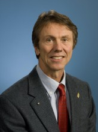

Please note: the AAS Obituaries are temporarily being hosted on this website while their full content is being ingested into the PubPub publishing platform newly adopted by the Bulletin of the American Astronomical Society. When the migration is complete, your existing links will take you to the final, migrated content. Contact peter.williams@aas.org with any questions.
Neil Gehrels (1952-2017)
Neil Gehrels passed away on the morning of February 6, 2017. He had been fighting pancreatic cancer, and his health had declined rapidly during his last few weeks. He died peacefully, surrounded by his family. The astrophysics community lost in him an inspired leader, a superb scientist and a friend.
Cornelis (a.k.a. Neil) Gehrels was born on October 3, 1952 in Lake Geneva, Wisconsin, and grew up in Arizona, where his father Tom Gehrels was an astronomer and professor at the University of Arizona. Neil graduated from the University of Arizona with bachelor degrees in both physics and music, and went on to receive his Ph.D. in Physics from Cal Tech in 1982, working on cosmic rays with Edward Stone. After a postdoctoral appointment at NASA's Goddard Space Flight Center he became a staff astrophysicist there, rising to become Chief of the NASA Astroparticle Physics Laboratory, with concurrent appointments as College Park Professor of Astronomy at The University of Maryland and Adjunct Professor of Astronomy and Astrophysics at Pennsylvania State University. His greatest scientific impact was as the Principal Investigator of the Swift space mission, dedicated to the investigation of cosmic gamma-ray burst sources. Among his other scientific administrative responsibilities, he was Project Scientist of the Compton Gamma-Ray Observatory, Mission Scientist of INTEGRAL, Deputy Project Scientist of Fermi and Project Scientist for the planned WFIRST mission.
He served as past Chair of the AAS High Energy Astrophysics Division and the APS Division of Astrophysics, and was President of the IAU Commission D.1 on Gravitational Wave Astrophysics. Among his many honors, he was a recipient of the Draper Medal of the National Academy of Sciences, the Rossi Prize of the AAS and, posthumously, the Dan David Prize; he was a Fellow of the APS, the AAAS and the American Academy of Arts and Sciences, and an Honorary Fellow of the Royal Astronomical Society, as well as a Member of the National Academy of Sciences, where he served as Chair of the Astronomy Division. He is survived by his wife Ellen Williams, Distinguished University Professor at the University of Maryland and former Director of ARPA-E at DOE; and their two children, Thomas, an electrical engineer; and Emily, a graduate student in Applied Physics.
Neil had a wide overview of space physics and astronomy, and an ability to identify the most important scientific problems, combined with a shrewd sense of which of these could be successfully addressed. He had a keen appreciation of the potentialities and limitations of a broad array of the relevant instrumentation, from cosmic rays through gamma-rays down to X-rays, optical and infra-red, and gifted insights as to he best observational strategies that would extract the maximum information.
His main scientific interests were in high energy transient sources, including supernovae, active galactic nuclei, magnetars and gamma-ray bursts (GRBs). In particular, his GRB work with Swift resulted in a quantum leap in our knowledge about these mysterious sources, including achieving the long-sought localization of the Short Gamma-Ray Bursts (SGRBs), which supported their origin as merging neutron stars; the discovery of shock breakouts from GRB massive stellar progenitors; the first gamma-ray detection of a stellar disruption by a massive black hole leading to a relativistic jet; and the characterization of two classes of gamma-ray emitting AGNs. He oversaw the transition of Swift from a specialized GRB mission to a multi-purpose guest investigator facility engaged in the astrophysics of high energy transients of all sorts, leading to a long list of important results about a host of different astronomical objects. He was prompt to respond to any Target of Opportunity observation requests, and he was alert and responsive to the evolving needs of the community for gamma-ray, X-ray and UV/O follow-ups as new space and ground-based facilities provided the opportunity for multi-band or multi-messenger discoveries in partnership with, e.g., LAT, ZTF, IceCube, LIGO, etc. He was dedicated to the open access to all of the Swift data, a policy that led to much of Swift's success over the past 12 years of operations.
Neil had a superb organizational ability, coupled with perceptiveness and good interpersonal skills. These qualities served him to become a successful leader of major, technically and politically challenging space missions, involving large numbers of people of different nationalities, temperaments and expertise. In his spare time, Neil was an avid hiker and mountaineer, an enthusiasm developed in his early years growing up in Arizona. Special highlights were his two solo ascents of the difficult Nose Route on El Capitan in Yosemite National Park, a 3000 foot rock wall, in 2006 and 2015. As a scientist, he found opportunities to hike or climb during the trips to conferences, which were often held in remote and exotic locations. He had a good sense of orientation and a knack for navigating in completely unknown terrains, an ability perhaps acquired through his mountaineering and which he had the opportunity to hone during five years of driving the maze of freeways around Los Angeles as a Cal Tech graduate student. Later, as a spokesperson for important science missions, he was capable of arriving late at night to hotels in previously unvisited parts of, e.g.., major Asian cities, and next morning quickly find his way on foot to a 30 minute distant, obscurely described workshop location. The highest expression of this ability may have been his uncanny skill in navigating the bureaucratic labyrinths through which large space missions must be shepherded during planning, building and operation phases, before producing the outstanding science for which these missions will be remembered.
As a scientist and in his personal achievements Neil had a very keen competitive spirit, great stamina and determination, combined with a warm and generous personality. The latter manifested itself both towards his collaborators and interactions with other colleagues with whom he had competed in various proposed NASA missions; after winning on a proposal, he always reached out to the other competitors to offer collaborations. He never viewed the competition as a personal contest but as a means to achieve the best science. His collaborators, his friends and the astronomical community as whole will miss him greatly.
Photo: NASA
Obituary written by: Peter Meszaros (Pennsylvania State University)
Additional links:
BAAS Citation: BAAS, 2017, 49, 007